Crab Sea
2025
An imagined branding for the Asian and Cajun seafood restaurant located in Durham, North Carolina, Crab Sea.With this rebrand, Crab Sea will have a consistent identity that promotes a friendly and affordable atmosphere. It slightly upscales the restaurant while maintaining its hole-in-the-wall feel, attracting local families and tourists to eat their high quality seafood.
Our company seeks to provide quality food at affordable prices, creating the greatest value for all customers that step foot into our restaurant. We believes in making food that not only tastes delicious but also fulfills a superb customer service experience.
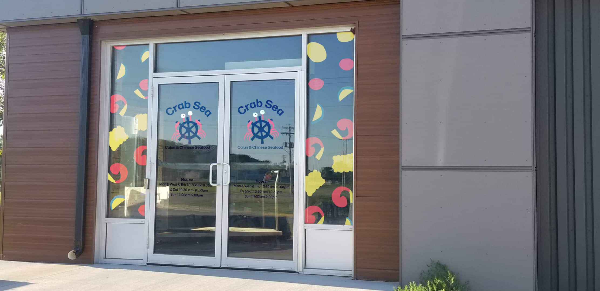
By creating a more playful brand with brighter colors and fun illustration, Crab Sea becomes more family friendly and inviting. The logo I constructed marries both aspects of the name straying from a simple crab logo most other seafood restaurants use. The current brand is very generic in logo and bland in design. It doesn’t really differentiate itself from other seafood restaurants in the area causing it to go unnoticed.
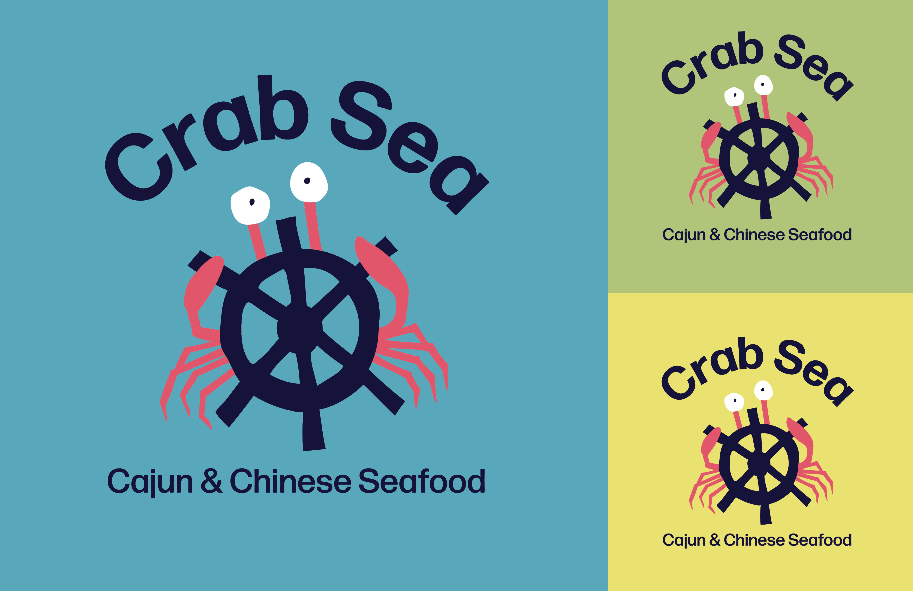
I focused on the seafood itself when developing the color and pattern, rather than the specific cultures the cuisine originates, in order to make the brand cohesive. Trying to visually (and literally) mash both Cajun and Chinese identities lead to a confusing brand with no single voice. It confused customers, not knowing what to expect when eating here. Despite this, I did find subtle ways to include both cultures, including overlapping commonly found colors, red and yellow.
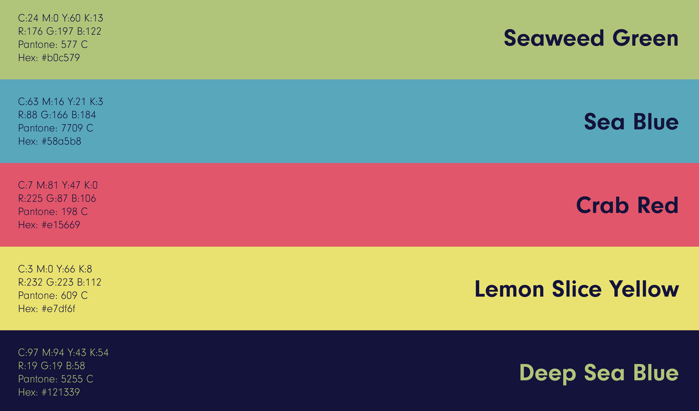
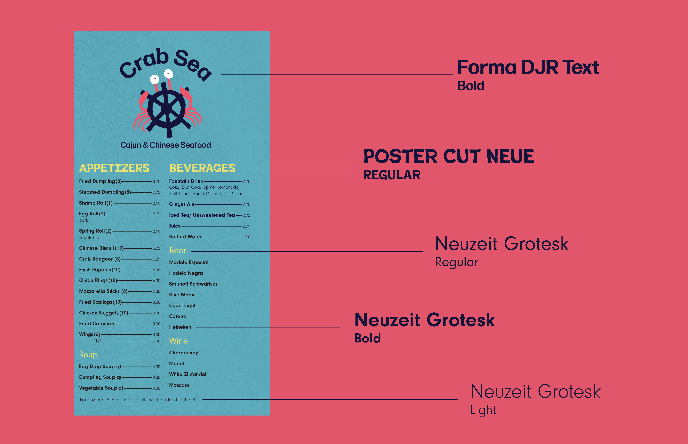
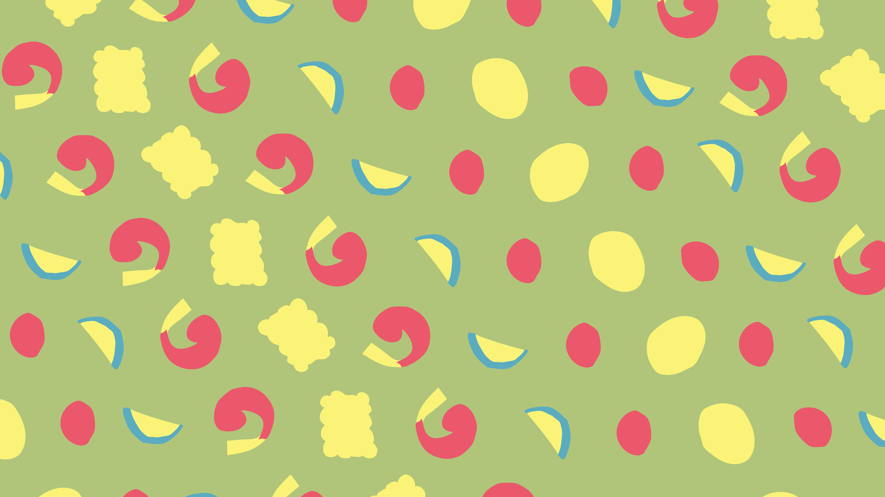
The main deliverable was the menu so I respectively put a lot of my effort into the design. The 11x17 paper sizing makes the menus easier to print for the owners. I also rearranged specific food groupings to organize in a way that’s easy for customers to follow and understand.
Crab Sea currently does an amazing job at photography when it comes to food documentation, showing the importance of authenticity and providing high quality food. To incorporate that element, I used the crab caricature as a fun way to display visualizations of the food.
Crab Sea currently does an amazing job at photography when it comes to food documentation, showing the importance of authenticity and providing high quality food. To incorporate that element, I used the crab caricature as a fun way to display visualizations of the food.

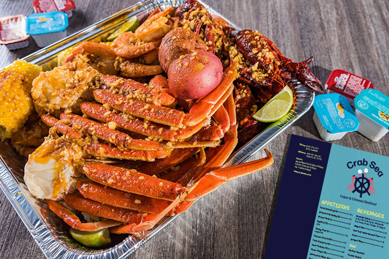
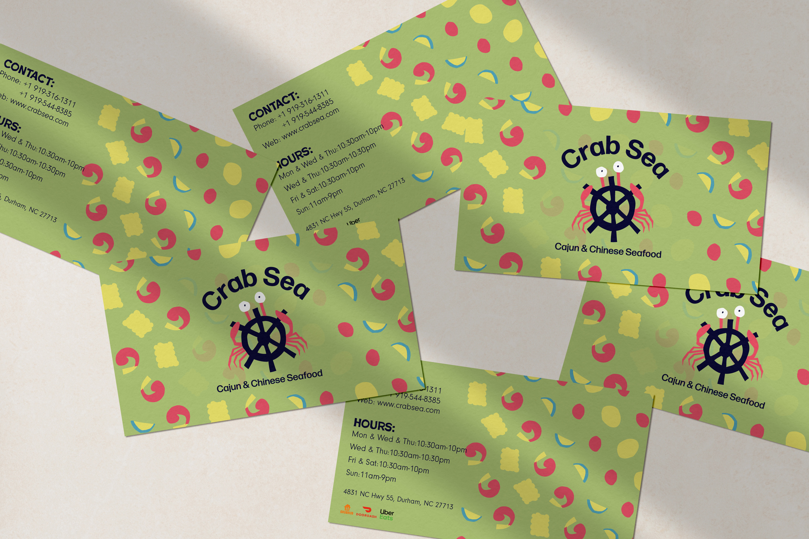

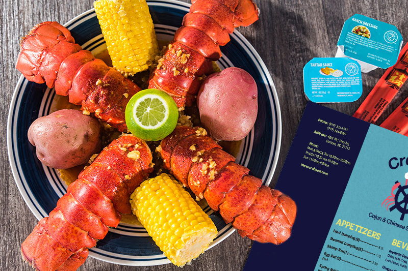
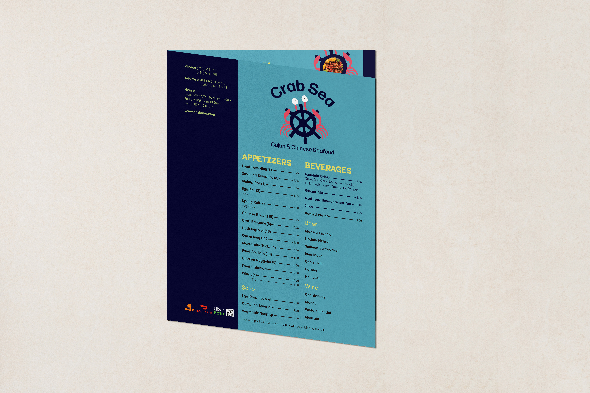
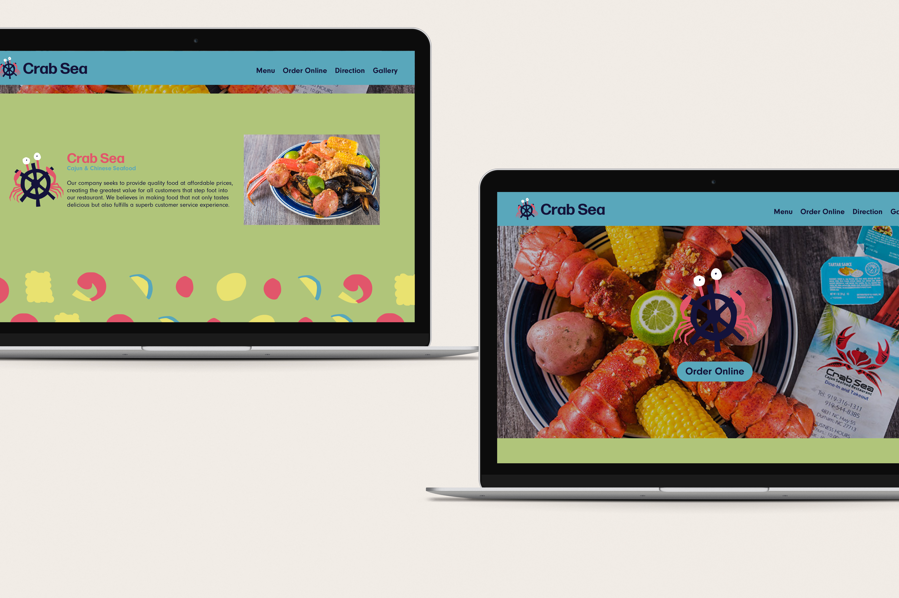
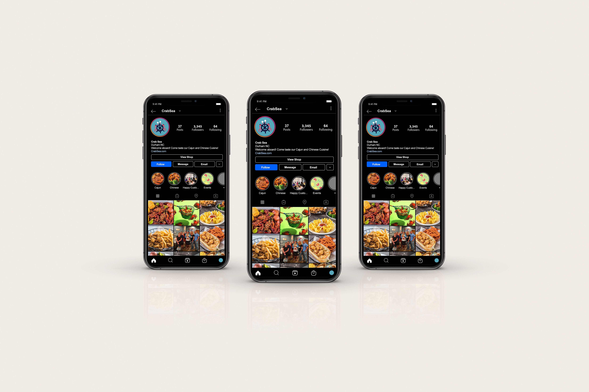
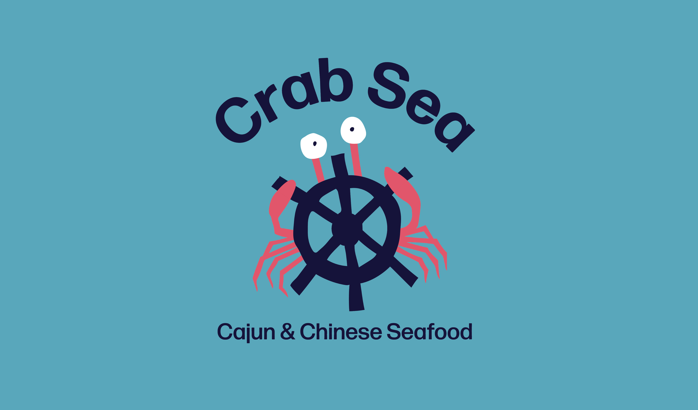